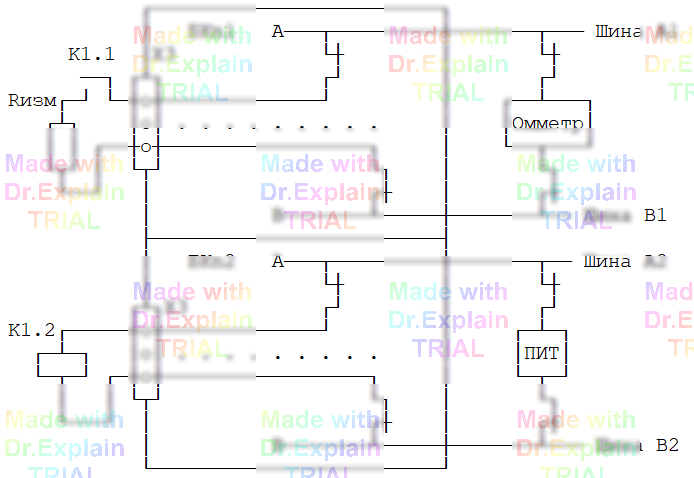

3.4 Совмещение с контролем функционирования
Для кабельных изделий все цепи, как правило, выведены на разъёмы, и их можно полностью проверить автоматическими командами АСК‑МКИ. Для объектов контроля (ОК) с навесными элементами ситуация иная: часть цепей и элементов может не иметь прямого выхода на разъёмы, поэтому «чистой» автоматикой 100% покрытия не достичь. Чтобы расширить охват, комбинируйте структурный контроль с контролем функционирования — временно воздействуйте на ОК (питание, ток, управляющие сигналы), чтобы сделать скрытые участки доступными измерению.
Общий приём
- Выполнить стандартные проверки доступных цепей (целостность, разобщение, R и т.д.).
- Подать стимулирующее воздействие на управляющий элемент (например, обмотку реле), чтобы замкнуть/разомкнуть контакты и «пробросить» измерительный тракт к скрытой цепи.
- Пока цепь в нужном состоянии, выполнить измерение (например, омическое сопротивление Rизм) через открывшийся путь.
- Снять воздействие, вернуть ОК в исходное состояние.
- Зафиксировать результат в протоколе.
Иллюстративный пример (см. рис. 3.1 в исходном руководстве)
Сопротивление Rизм подключено за контактом реле K1.1, который в
нормальном состоянии разомкнут и не доступен напрямую. Подайте напряжение на
обмотку реле K1.2, чтобы перевести K1.1 в замкнутое состояние; после этого цепь Rизм
окажется выведенной на доступные точки АСК, и её можно измерить командой контроля
сопротивления (например, КС).
Псевдопоследовательность
// Возбудить реле (примерная форма — адаптируйте под вашу конфигурацию)
10 ЦУ Подайте питание на обмотку K1.2 ?
// Проверка сопротивления, пока контакт K1.1 замкнут
20 КС R=... *X1:a,X1:b*
// Снять питание и вернуть в исходное состояние
30 ЦУ Снимите питание с K1.2 ?
// Продолжить программу...Такой подход помогает приблизиться к требуемому уровню покрытия, когда часть узлов иначе недоступна. Подробные приёмы организации функциональных воздействий см. в последующей главе (п. 4 исходного руководства).
На рисунке показано замыкание контакта реле для доступа к Rизм:
